Library of mathematical functions as input/output blocks
This package contains basic mathematical operations, such as summation and multiplication, and basic mathematical functions, such as sqrt and sin, as input/output blocks. All blocks of this library can be either connected with continuous blocks or with sampled-data blocks.
Extends from Modelica.Icons.Package (Icon for standard packages).
| Name | Description |
|---|---|
| Gain | Output the product of a gain value with the input signal |
| 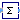 Sum | Output the sum of the elements of the input vector |
| Feedback | Output difference between commanded and feedback input |
| Add | Output the sum of the two inputs |
| 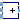 Add3 | Output the sum of the three inputs |
| Product | Output product of the two inputs |
| Division | Output first input divided by second input |
| 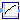 Sqrt | Output the square root of the input (input >= 0 required) |
| 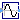 Sin | Output the sine of the input |
| 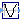 Cos | Output the cosine of the input |
| 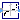 Tan | Output the tangent of the input |
| 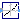 Asin | Output the arc sine of the input |
| 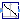 Acos | Output the arc cosine of the input |
| 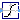 Atan | Output the arc tangent of the input |
| 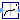 Sinh | Output the hyperbolic sine of the input |
| Cosh | Output the hyperbolic cosine of the input |
| 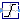 Tanh | Output the hyperbolic tangent of the input |
| 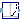 Exp | Output the exponential (base e) of the input |
| 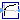 Log | Output the natural (base e) logarithm of the input (input > 0 required) |
| RealToComplex | Converts Cartesian representation to complex |
| PolarToComplex | Converts polar representation to complex |
| ComplexToReal | Converts complex to Cartesian representation |
| ComplexToPolar | Converts complex to polar representation |
Output the product of a gain value with the input signal
This block computes output y as product of gain k with the input u:
y = k * u;
| Name | Description |
|---|---|
| k | Gain value multiplied with input signal |
| Name | Description |
|---|---|
| u | Input signal connector |
| y | Output signal connector |
Output the sum of the elements of the input vector
This blocks computes output y as sum of the elements of the input signal vector u:
y = u[1] + u[2] + ...;
Example:
parameter: nin = 3;
results in the following equations:
y = u[1] + u[2] + u[3];
Extends from Interfaces.ComplexMISO (Multiple Input Single Output continuous control block).
| Name | Description |
|---|---|
| nin | Number of inputs |
| k[nin] | Optional: sum coefficients |
| Name | Description |
|---|---|
| u[nin] | Connector of Complex input signals |
| y | Connector of Complex output signal |
Output difference between commanded and feedback input
This blocks computes output y as difference of the commanded input u1 and the feedback input u2:
y = u1 - u2;
Example:
parameter: n = 2
results in the following equations:
y = u1 - u2
| Name | Description |
|---|---|
| u1 | |
| u2 | |
| y |
Output the sum of the two inputs
This blocks computes output y as sum of the two input signals u1 and u2:
y = k1*u1 + k2*u2;
Example:
parameter: k1= +2, k2= -3
results in the following equations:
y = 2 * u1 - 3 * u2
Extends from Interfaces.ComplexSI2SO (2 Single Input / 1 Single Output continuous control block).
| Name | Description |
|---|---|
| k1 | Gain of upper input |
| k2 | Gain of lower input |
| Name | Description |
|---|---|
| u1 | Connector of Complex input signal 1 |
| u2 | Connector of Complex input signal 2 |
| y | Connector of Complex output signal |
Output the sum of the three inputs
This blocks computes output y as sum of the three input signals u1, u2 and u3:
y = k1*u1 + k2*u2 + k3*u3;
Example:
parameter: k1= +2, k2= -3, k3=1;
results in the following equations:
y = 2 * u1 - 3 * u2 + u3;
Extends from Modelica.Blocks.Icons.Block (Basic graphical layout of input/output block).
| Name | Description |
|---|---|
| k1 | Gain of upper input |
| k2 | Gain of middle input |
| k3 | Gain of lower input |
| Name | Description |
|---|---|
| u1 | Connector 1 of Complex input signals |
| u2 | Connector 2 of Complex input signals |
| u3 | Connector 3 of Complex input signals |
| y | Connector of Complex output signals |
Output product of the two inputs
This blocks computes the output y (element-wise) as product of the corresponding elements of the two inputs u1 and u2:
y = u1 * u2;
Extends from Interfaces.ComplexSI2SO (2 Single Input / 1 Single Output continuous control block).
| Name | Description |
|---|---|
| u1 | Connector of Complex input signal 1 |
| u2 | Connector of Complex input signal 2 |
| y | Connector of Complex output signal |
Output first input divided by second input
This block computes the output y (element-wise) by dividing the corresponding elements of the two inputs u1 and u2:
y = u1 / u2;
Extends from Interfaces.ComplexSI2SO (2 Single Input / 1 Single Output continuous control block).
| Name | Description |
|---|---|
| u1 | Connector of Complex input signal 1 |
| u2 | Connector of Complex input signal 2 |
| y | Connector of Complex output signal |
Output the square root of the input (input >= 0 required)
This blocks computes the output y as square root of the input u:
y = sqrt( u );
All elements of the input vector shall be zero or positive. Otherwise an error occurs.
Extends from Interfaces.ComplexSISO (Single Input Single Output continuous control block).
| Name | Description |
|---|---|
| u | Connector of Complex input signal |
| y | Connector of Complex output signal |
Output the sine of the input
This blocks computes the output y as sine of the input u:
y = sin( u );
Extends from Interfaces.ComplexSISO (Single Input Single Output continuous control block).
| Name | Description |
|---|---|
| u | Connector of Complex input signal |
| y | Connector of Complex output signal |
Output the cosine of the input
This blocks computes the output y as cos of the input u:
y = cos( u );

Extends from Interfaces.ComplexSISO (Single Input Single Output continuous control block).
| Name | Description |
|---|---|
| u | Connector of Complex input signal |
| y | Connector of Complex output signal |
Output the tangent of the input
This blocks computes the output y as tan of the input u:
y = tan( u );

Extends from Interfaces.ComplexSISO (Single Input Single Output continuous control block).
| Name | Description |
|---|---|
| u | Connector of Complex input signal |
| y | Connector of Complex output signal |
Output the arc sine of the input
This blocks computes the output y as the sine-inverse of the input u:
y = asin( u );
The absolute values of the elements of the input u need to be less or equal to one (abs( u ) <= 1). Otherwise an error occurs.

Extends from Interfaces.ComplexSISO (Single Input Single Output continuous control block).
| Name | Description |
|---|---|
| u | Connector of Complex input signal |
| y | Connector of Complex output signal |
 Modelica.ComplexBlocks.ComplexMath.Acos
Modelica.ComplexBlocks.ComplexMath.AcosOutput the arc cosine of the input
This blocks computes the output y as the cosine-inverse of the input u:
y = acos( u );
The absolute values of the elements of the input u need to be less or equal to one (abs( u ) <= 1). Otherwise an error occurs.

Extends from Interfaces.ComplexSISO (Single Input Single Output continuous control block).
| Name | Description |
|---|---|
| u | Connector of Complex input signal |
| y | Connector of Complex output signal |
Output the arc tangent of the input
This blocks computes the output y as the tangent-inverse of the input u:
y= atan( u );

Extends from Interfaces.ComplexSISO (Single Input Single Output continuous control block).
| Name | Description |
|---|---|
| u | Connector of Complex input signal |
| y | Connector of Complex output signal |
Output the hyperbolic sine of the input
This blocks computes the output y as the hyperbolic sine of the input u:
y = sinh( u );

Extends from Interfaces.ComplexSISO (Single Input Single Output continuous control block).
| Name | Description |
|---|---|
| u | Connector of Complex input signal |
| y | Connector of Complex output signal |
Output the hyperbolic cosine of the input
This blocks computes the output y as the hyperbolic cosine of the input u:
y = cosh( u );

Extends from Interfaces.ComplexSISO (Single Input Single Output continuous control block).
| Name | Description |
|---|---|
| u | Connector of Complex input signal |
| y | Connector of Complex output signal |
Output the hyperbolic tangent of the input
This blocks computes the output y as the hyperbolic tangent of the input u:
y = tanh( u );

Extends from Interfaces.ComplexSISO (Single Input Single Output continuous control block).
| Name | Description |
|---|---|
| u | Connector of Complex input signal |
| y | Connector of Complex output signal |
Output the exponential (base e) of the input
This blocks computes the output y as the exponential (of base e) of the input u:
y = exp( u );

Extends from Interfaces.ComplexSISO (Single Input Single Output continuous control block).
| Name | Description |
|---|---|
| u | Connector of Complex input signal |
| y | Connector of Complex output signal |
Output the natural (base e) logarithm of the input (input > 0 required)
This blocks computes the output y as the natural (base e) logarithm of the input u:
y = log( u );
An error occurs if the elements of the input u are zero or negative.

Extends from Interfaces.ComplexSISO (Single Input Single Output continuous control block).
| Name | Description |
|---|---|
| u | Connector of Complex input signal |
| y | Connector of Complex output signal |
Converts Cartesian representation to complex
Converts the Real inputs re (real part) and im (imaginary part) to the Complex output y.
Extends from Modelica.ComplexBlocks.Interfaces.ComplexSO (Single Output continuous control block).
| Name | Description |
|---|---|
| y | Connector of Complex output signal |
| re | |
| im |
Converts polar representation to complex
Converts the Real inputs len (length, absolute) and phi (angle, argument) to the Complex output y.
Extends from Modelica.ComplexBlocks.Interfaces.ComplexSO (Single Output continuous control block).
| Name | Description |
|---|---|
| y | Connector of Complex output signal |
| len | |
| phi |
Converts complex to Cartesian representation
Converts the Complex input u to the Real outputs re (real part) and im (imaginary part).
Extends from Modelica.Blocks.Icons.Block (Basic graphical layout of input/output block).
| Name | Description |
|---|---|
| re | |
| im | |
| u |
Converts complex to polar representation
Converts the Complex input u to the Real outputs len (length, absolute) and phi (angle, argument).
Extends from Modelica.Blocks.Icons.Block (Basic graphical layout of input/output block).
| Name | Description |
|---|---|
| len | |
| phi | |
| u |